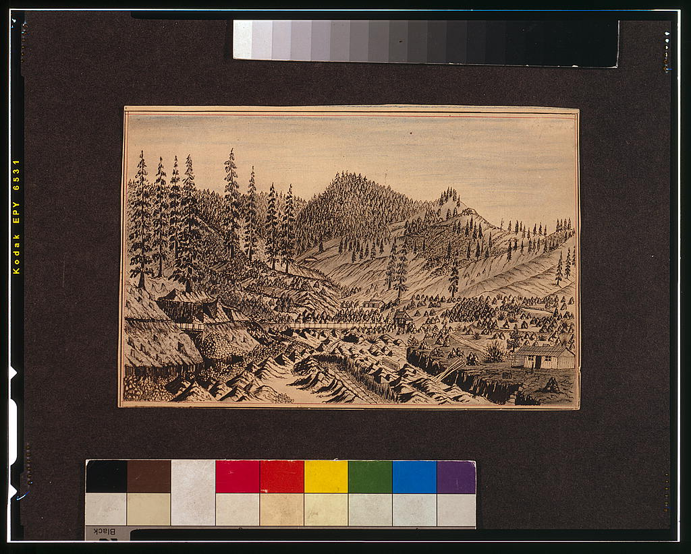
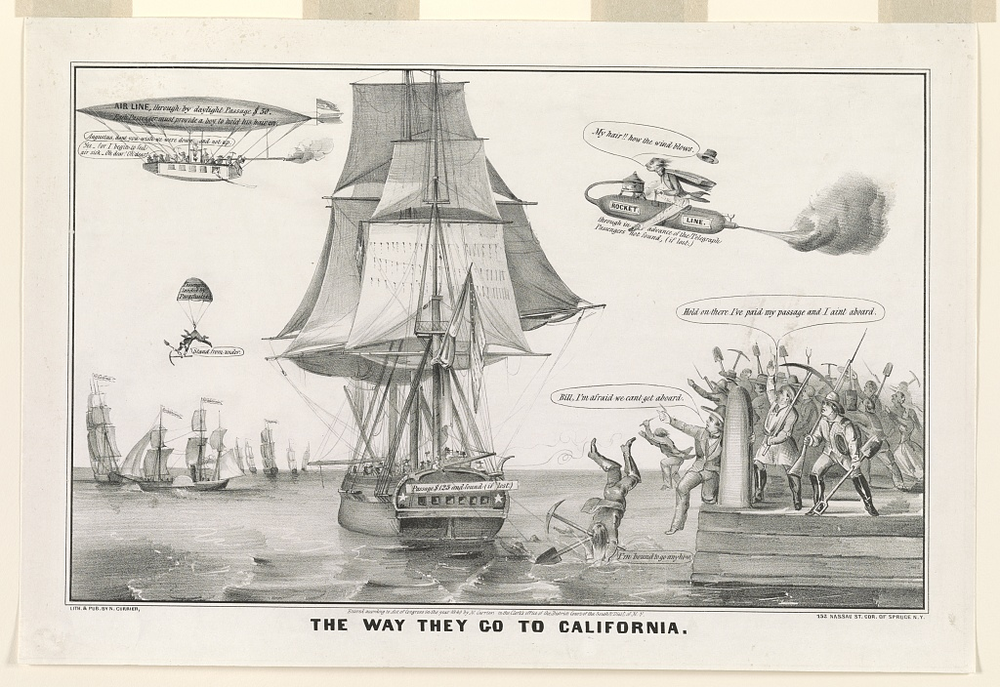

The significance of the Gold Rush is that decades of development were condensed into a few years filled with movement, opportunity, and violence. As a result of the Mexican-American War, the United States acquired California, but the acquisition was solidified through the lure of gold, which caused hundreds of thousands of people to migrate toward the Pacific coast. The Gold Rush helped bring California into the Union as a free state, fostered a market-based economy in the region, and built a society shaped by mining settlements, merchants, land conflicts, racism, and environmental degradation. It delivered the promise of Manifest Destiny to many white Americans, but it also showed the human costs of that promise for Native Californians, Chinese immigrants, Californios, and the miners themselves.
California, 1848-1855
The Gold Rush remade the American West faster than law or justice could follow.
A discovery at Sutter's Mill became a mass migration, a new state, a global labor market, and a crisis for Native Californians. Gold promised freedom and opportunity, but the rush also showed how quickly expansion could create violence, exclusion, and environmental damage.
Historical argument
The Gold Rush was a turning point because it converted conquest into settlement, statehood, and conflict.
Revolution, reaction, reform
The Gold Rush fits the theme because sudden opportunity produced sudden reaction.
Revolution
The rush transformed the West by making California a hub for migration, trade, and national focus. What had recently been a sparsely populated former Mexican territory quickly became a densely populated global community.
Reaction
The reaction was not only enthusiasm. It also included violence against Native people in California, opposition to foreign miners, and regulations that restricted who could access the gold fields.
Reform
Reform came through new institutions such as statehood, courts, mining laws, city governments, and eventually restrictions on destructive mining practices. However, these reforms often came too late, after the damage was already under way.
Timeline
The rush moved from rumor to statehood to lasting consequence.
1848
Gold is discovered at Sutter's Mill.
James Marshall found gold on January 24, 1848, while building a sawmill for John Sutter. Sutter wanted secrecy, but the discovery spread through California and then across the United States.
The discovery happened just after the United States acquired California from Mexico, so gold turned conquest into a migration crisis and a national opportunity.
Causes and consequences
Every group entered the Gold Rush with different hopes and different risks.
Miners
Most miners came to California dreaming about freedom and a better life. While some struck surface gold at first, competition, high costs, illness, and fatigue made real wealth hard to acquire.
Their experience shows the gap between opportunity and reality. A miner could be technically free and still be trapped by the price of food, tools, travel, and claims.
Evidence and context
Mining methods changed the land as much as they changed the economy.

Panning
Panning was an easy and inexpensive process, giving the first stage of mining an accessible appeal. Early miners used shallow pans to wash lighter sediment away from heavier gold.
Easy surface mining helped create the first massive migration, but it did not last.
Source analysis
Primary sources show the Gold Rush as a lived experience, not just a legend.
Matthew Dinsdale's 1850 letter
Dinsdale's letter helps show how people in California described Gold Rush life while it was happening. It makes the rush feel less like a broad national myth and more like a lived experience.
Multiple perspectives
The same rush looked different depending on who paid the cost.

Forty-Niners
Most migrants viewed the Gold Rush as an opportunity to move beyond normal limits. The journey was costly and dangerous, but the promise of sudden riches made the risks feel justifiable.

People in the camps
Mining camps were shaped by hard work, gambling, illness, homesickness, and high prices. The rush created community, but it also brought instability because law and order did not keep up with the influx of people.
Those pushed aside
Native Californians, Californios, and Chinese immigrants felt the effects of the rush through dispossession, discrimination, and exclusion. Their perspective shows that expansion created winners by making other people vulnerable.
Historical significance
The Gold Rush was a shortcut into modern California, and shortcuts have costs.
By the mid-1850s, California was no longer a far-off conquest on a map. It was a free state, a center for Pacific commerce, an international magnet for migration, and a cautionary tale about unchecked territorial expansion. In the end, the Gold Rush helped make good on the American dream of the West, but it also defined the exclusions built into that dream.
Annotated Bibliography
Primary Sources
Dinsdale, Matthew. "Letter from Rev. Matthew Dinsdale to Brother 1850 April 7." Gold Rush Life, University of the Pacific Scholarly Commons, 7 Apr. 1850.
I used this letter to understand how people in California described Gold Rush life while it was happening. It helped me see the rush as a lived experience, not just a broad national event.
McElroy, Thornton F. "Thornton F. McElroy Letter to His Wife Sarah about Gold Mining in California, June 19, 1850." Digital Public Library of America, University of Washington, 19 June 1850.
I used this letter to support my section about miners, risk, sickness, and the difficulty of actually making money. It helped me understand the gap between the dream of striking it rich and the reality of mining life.
Shirley, Dame. The Shirley Letters from California Mines in 1851-52. Project Gutenberg, 2007.
I used these letters to understand daily life and social conditions in California mining camps. This source was useful because it gives a woman's perspective on the Gold Rush and helped strengthen my multiple-perspectives section.
Wood, Charles A. "Letter by California Gold Rush Venturer Charles A. Wood, Written from Acapulco, Mexico, February 10, 1850." The Henry Ford, 10 Feb. 1850.
I used this letter to understand the travel and communication side of the Gold Rush. It helped show that the rush was not only about mining, but also about long, difficult journeys to California.
Secondary Sources
California State Parks. "Gold Rush Overview." California State Parks.
I used this source for background information about California's population growth during the Gold Rush. It helped me explain how quickly the region changed after gold was discovered.
National Park Service. "Gold Rush Transforms San Francisco." National Park Service.
I used this source to connect mining to the growth of cities and trade. It helped me explain how the Gold Rush transformed San Francisco from a small port into an important Pacific city.
National Park Service. "The California Gold Rush." California National Historic Trail, National Park Service.
I used this source for the timeline and migration statistics, especially the number of emigrants who traveled the California Trail in 1849. It helped me show that the Gold Rush was one of the largest migrations in American history.
Visual credits: Library of Congress images of miners, migration, and return from California are used in the website as credited visual material.